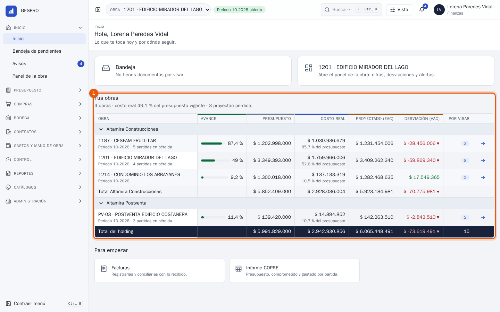
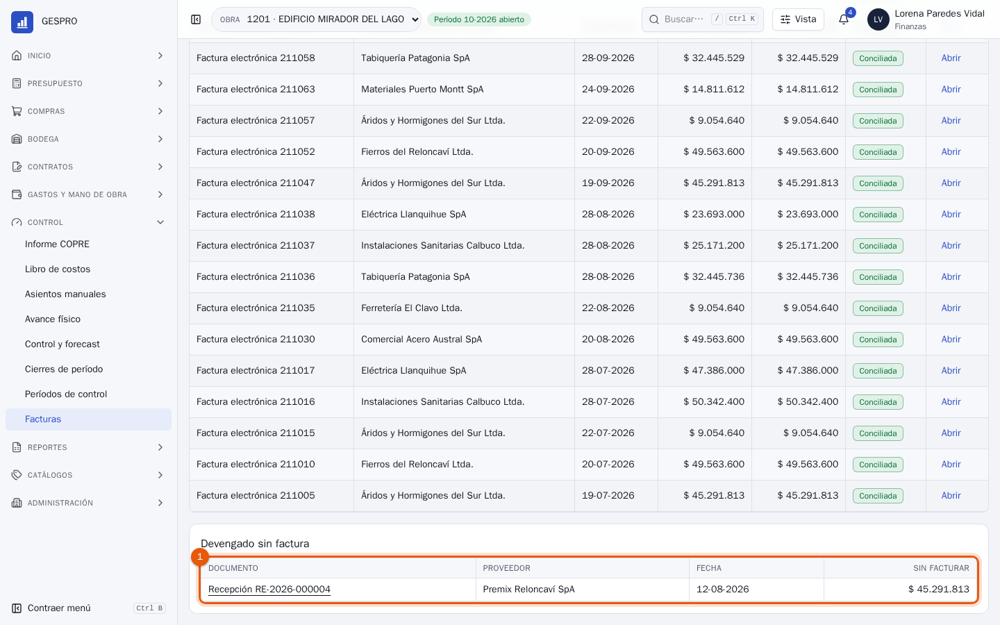
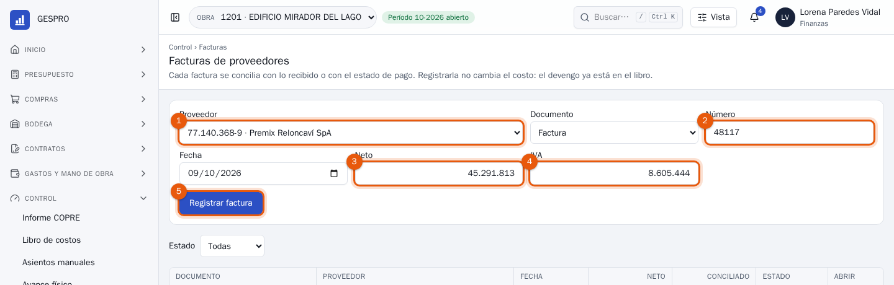
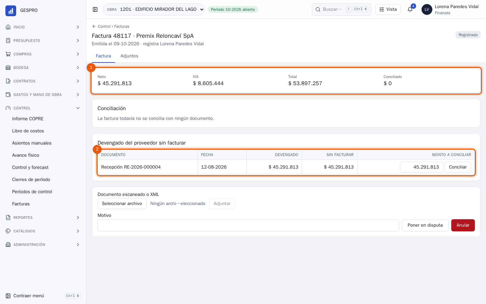
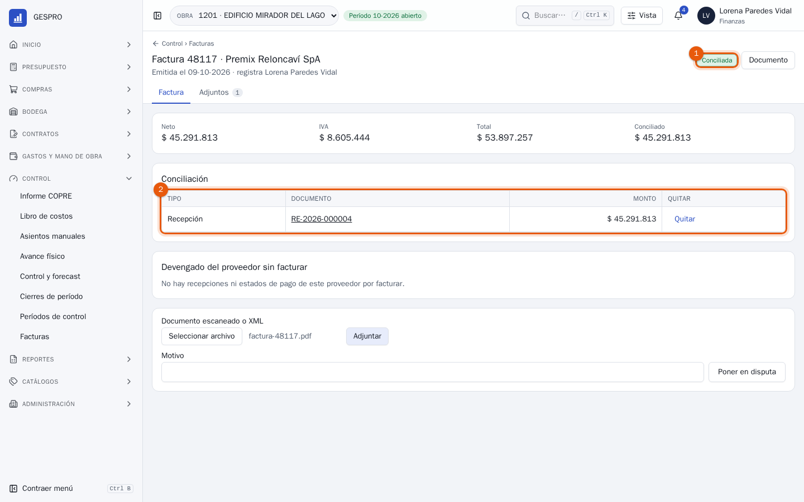
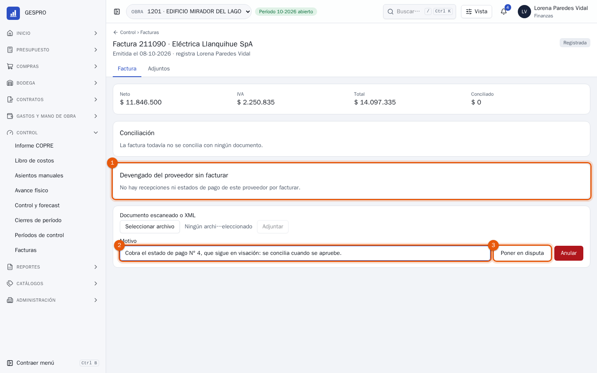
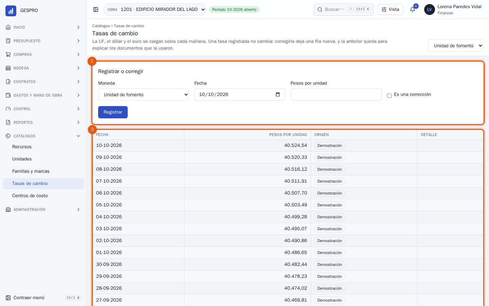

Manual de usuario
Finanzas en GESPRO
Para quien recibe las facturas de los proveedores y subcontratistas: registrarlas, conciliarlas con lo que la obra recibió o aprobó, ponerlas en disputa cuando no corresponden y cuidar las tasas de cambio con que se valorizan los documentos.
- Rol en GESPRO
- Finanzas
- Sus pantallas
- Inicio · Facturas · Tasas de cambio
- Ejemplos con
- Lorena Paredes · obra 1201 Edificio Mirador del Lago
1Lo que hace finanzas
En GESPRO el costo nace cuando la obra recibe o aprueba, no cuando llega la factura: una recepción confirmada o un estado de pago aprobado ya están en el libro de costos. Finanzas registra la factura y la concilia con ese documento, para que todo lo devengado quede facturado. Los pasos destacados son los de este manual.
- DevengoBodega recibe o la obra aprueba el estado de pago.
- Registrar la facturaProveedor, número, neto e IVA.
- ConciliarCon la recepción o el estado de pago.
- DisputaCuando la factura no corresponde.
- Cierre del mesAvisa lo devengado sin factura.
| Quién | Qué hace con lo de finanzas |
|---|---|
| Bodega | Confirma las recepciones que las facturas de materiales vienen a cobrar. |
| Cadena del estado de pago | Aprueba lo que cobra el subcontratista; recién entonces su factura se concilia. |
| Control de gestión | Ve en el cierre del mes lo recibido sin factura y las facturas sin conciliar. |
2Las obras del holding
Finanzas ve todas las obras de las empresas del holding, cada una con sus cifras de control a hoy.

- Tus obras, agrupadas por empresa: avance, presupuesto, costo real, lo proyectado al término y la desviación. La flecha abre el panel de cada obra; abajo, los accesos para empezar.
3Lo devengado sin factura
En Control › Facturas están las facturas de la obra y, al final, lo que ya es costo y todavía no tiene factura.

- Devengado sin factura: el documento, el proveedor al que se le pide la factura, su fecha y el monto. El folio abre la recepción o el estado de pago.
4Registrar y conciliar una factura
La factura de Premix Reloncaví llegó. Se registra arriba, en la misma pantalla.

- El proveedor. Debajo, el tipo de documento: factura, factura electrónica, nota de crédito o de débito, boleta de honorarios.
- El número del documento, y su fecha de emisión.
- El neto, que es lo que se concilia.
- El IVA.
- Registrar factura abre su ficha.

- Los montos de la factura y cuánto lleva conciliado.
- Lo devengado del proveedor sin facturar: GESPRO propone conciliar lo pendiente de cada documento, en pesos enteros y sin pasar lo que le queda a la factura. Conciliar lo une; una factura puede cubrir varios documentos, o una parte de uno.

- Conciliada: lo conciliado es igual al neto.
- La conciliación, con el documento y su monto. Quitar la deshace. Abajo se adjunta el PDF o el XML de la factura.
Para tener en cuentaRegistrar o conciliar una factura no cambia el costo: el devengo ya está en el libro. Lo que cambia es que la recepción deja de aparecer como sin factura.
5Una factura en disputa
Eléctrica Llanquihue facturó el estado de pago N° 4, que todavía está en visación. No hay nada que conciliar: la factura se pone en disputa con el motivo.

- Sin devengado: el proveedor no tiene recepciones ni estados de pago aprobados por facturar.
- El motivo de la disputa.
- Poner en disputa la marca como disputada. Cuando el estado de pago se apruebe, Cerrar la disputa la devuelve y se concilia. Si la factura no corresponde, Anular, también con su motivo.
6Las tasas de cambio
Un documento en UF, dólares o euros se valoriza con la tasa de su propio día. En Catálogos › Tasas de cambio están las de los últimos 60 días.

- Registrar o corregir. La UF, el dólar y el euro se cargan solos cada mañana; aquí se registra una que faltó. Una corrección deja una fila nueva y la anterior queda, para explicar los documentos que la usaron.
- Las tasas, con su origen. Arriba a la derecha se elige la moneda.
7Preguntas frecuentes
La factura y la recepción difieren en centavos.
La factura va en pesos enteros y lo devengado puede tener centavos. GESPRO concilia lo pendiente redondeado al peso, y la factura queda conciliada.
El proveedor facturó más de lo recibido.
GESPRO no deja conciliar más de lo que le queda por facturar al documento. Concilia lo que corresponde y pon la factura en disputa con la diferencia en el motivo.
¿Y las notas de crédito?
Se registran como las facturas, con su tipo, pero no se concilian con recepciones ni estados de pago.
¿Qué pasa si cierro el mes con facturas pendientes?
El cierre no se detiene: avisa lo recibido sin factura completa y las facturas sin conciliar, para que control de gestión lo vea.
No hay UF para un día.
Regístrala aquí. Un documento de ese día no se valoriza con la UF de otro día: espera a que exista la suya.